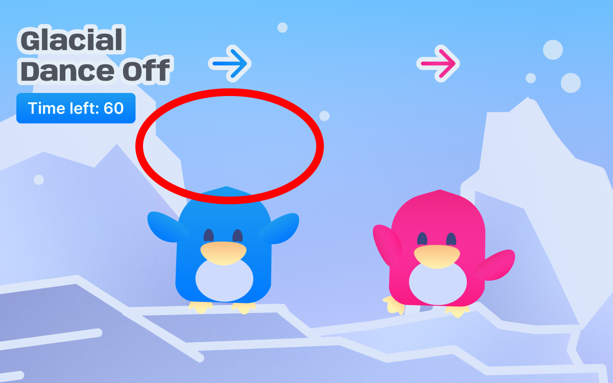
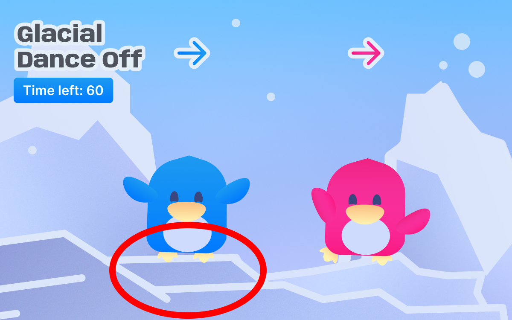

Final Project User Test Session & Results
Update Restart Button
It is better to have a distinct button to restart the game instead of the logo. It was difficult to find unless there was a guided tour of how to navigate it.
Redefine Rules
Normal Dance Dance revolution shows a space where you have to press an arrow at a certain point. It was unclear that mine just had a line limit and the rules are different due to experience constraints.
Arrow Indicator
An indicator to show if they pressed the arrow on the screen is nice to know in case they are unsure if the button worked or not.
Implementation
From my user test results, I plan to add a button for the music, restart with a precaution warning, and rules. The rules an illustration, so it is easier to understand and make a clear differentiation between Dance Dance Revolution. I am not sure if I will add the arrow indicator yet, but I will if time permits.